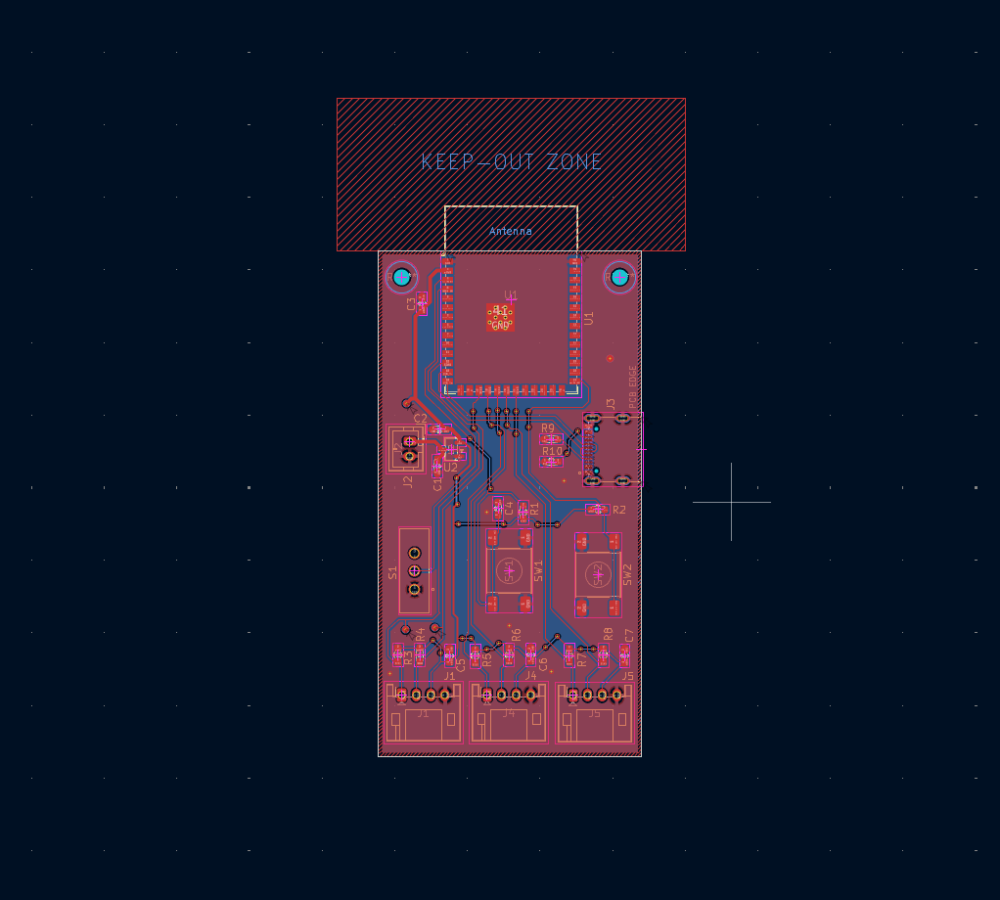
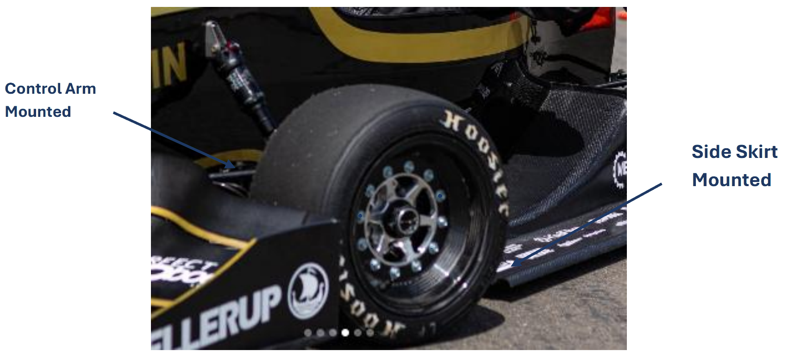
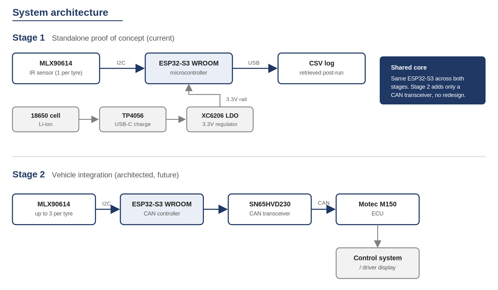
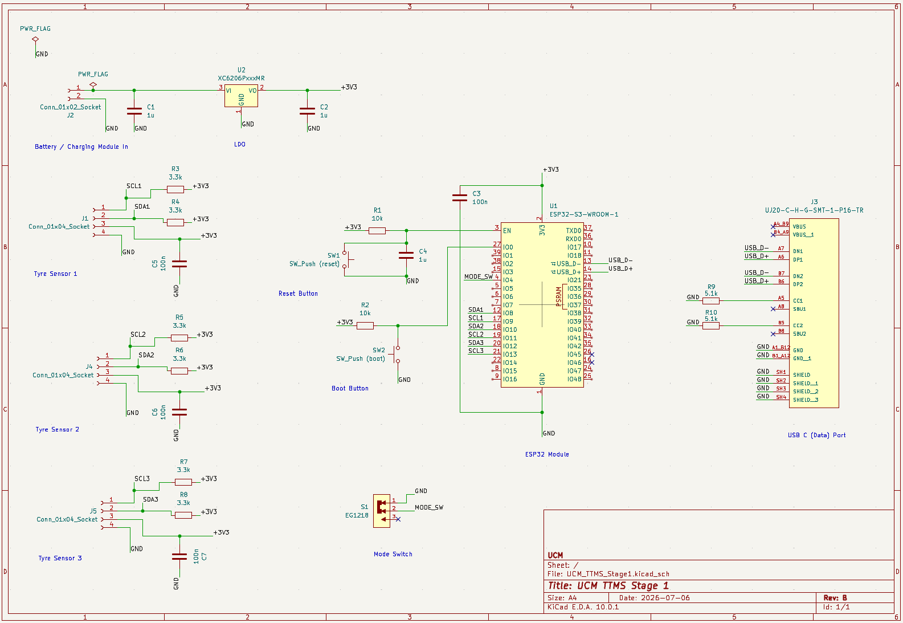

FSAE / Sensing
Tyre Temperature Sensor

Junior-led project with UC Motorsport (FSAE), building the team's first onboard tyre-temperature logging system. Tyre grip is temperature dependent, and the control system currently has no visibility into it. Stage 1 is a standalone proof-of-concept board: an infrared sensor reads tyre surface temperature over I2C to an ESP32-S3, logged to CSV and retrieved over USB. Schematic, layout and BOM are complete, and the PCB and hardware are on order.
Research
- Reviewed how tyre temperature is measured across FSAE and F1: internal probes ruled out as invasive and impractical, thermal cameras ruled out as unsuited to onboard logging, and contact sensors ruled out as unable to survive a rotating tyre.
- Selected non-contact IR pyrometry, the team's recommended approach, as the method fitting a self-contained proof of concept.
- Noted that surface temperature is a proxy for the carcass temperature that actually governs grip, and that professional teams run three sensors across the tread to see camber and pressure effects a single point hides. That shaped the multi-channel provisioning below.

- Wrote the literature review that set the staged plan: Stage 1 standalone, Stage 2 CAN integration with the team's ECU, with the architecture chosen now so Stage 2 is not a redesign.
- Got confirmation from the team lead on the first practical use for that data, if the proof of concept holds up: a variable friction coefficient fed into the car's newly implemented traction control system.
System design and verification

- Selected the ESP32-S3 for its onboard CAN controller, needed for the later ECU integration.
- Powered the board from a standalone battery so validation never touches the car's electrical system.
- Designed the schematic in KiCad across five functional blocks, provisioning three sensor connectors so a second and third sensor are a population change later, not a respin, each on its own I2C bus since every sensor ships at the same address.

- Caught, before fabrication, that the microcontroller variant originally specified would fail to boot on its stock firmware image, and swapped to a footprint-compatible variant with no respin needed.
- Took the layout through to a fully routed board, matched the manufacturing tolerances to the fab house's real capability, and passed JLCPCB's DFM check before ordering.
Build preparation
- Built a complete, vendor-neutral bill of materials and sourced mostly through DigiKey.
- Reworked the power system on the fly when a planned battery went out of stock; the replacement ended up simpler than the original plan.
- Specified the firmware for sensor reading, CSV logging and USB retrieval.
Schematic, layout and BOM complete, DFM-passed by JLCPCB. PCB and hardware now on order.
Learned
- I learned to validate every part choice against its actual stock and spec before locking it in, not just the datasheet. That caught a guaranteed no-boot board before fabrication.
- I learned to gauge how far to design ahead. Extra sensor connectors were cheap, low-risk insurance for a stage that isn't scoped yet. A full CAN circuit would have been overreach at this stage, especially while I was still building PCB experience.